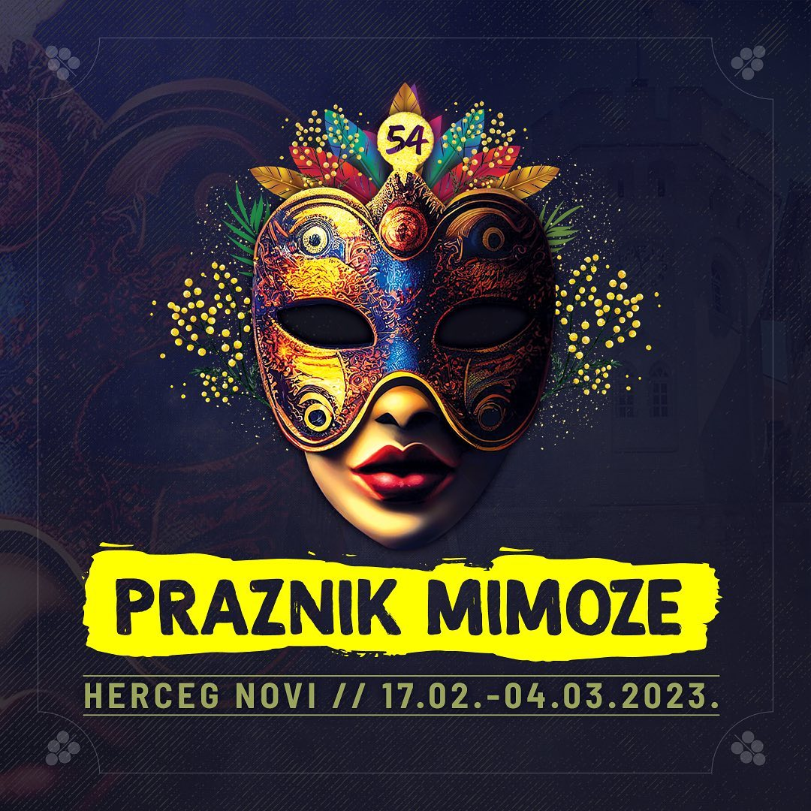

53. PRAZNIK MIMOZE 2023
Praznik mimoze biće održan 53. put u Herceg Novom od sredine februara do polovine marta i obuhvatiće 43 zabavna, kulturna i sportska programa, najavljeno je danas na konferenciji za novinare u foajeu Dvorane Park.

Svečano otvaranje zakazano je za 18. februar kada će na Trgu Nikole Đurkovića nastupiti Neda Ukraden, a na zatvaranju koje je najavljeno za 05. mart nastupiće Dejan Petrović i Big Band. Tradicionalno, u oba događaja će učestvovati Gradska muzika i mažoretke Herceg Novi, Mjesna muzika Đenović i Trombonjeri.
Bogat program 53. Praznika mimoze obuhvata dešavanja koja će početi već od 03. februara otvaranjem Hercegnovskog zimskog salona u galeriji „Josip Bepo Benković“, a trajaće do 08. marta. Pored ceremonija otvaranja i zatvaranja sa koncertima, očekuju nas: tradicionalna Berba mimoze na rivijeri, maskenbali za odrasle i djecu, Riblja večera, prepoznatljivi Picigin i Karotrc, Izložba cvijeća, predstavljanje prijateljskih gradova Novo Mesto, Sankt Peterburg i Beograd, Sajam vina, muzičko-gastronomska Otvorena ulica u Igalu, pet predstava, dvije izložbe, koncert Muzičke škole, pet književnih večeri i 14 sportskih programa.
Trudili smo se da zadržimo sve ono po čemu je Praznik mimoze prepoznat svih prethodnih godina: ceremonije otvaranja i zatvaranja, sportski programi, tradicionalna fešta od mimoze, ribe i vina, maskenbali“, kazao je predsjednik Opštine Herceg Novi, Stevan Katić.
On je istakao da je Organizacioni odbor nekoliko mjeseci unazad radio na pripremi ovogodišnjeg praznika, s posebnom pažnjom prateći razvoj epidemiološke situacije. Ističući zadovoljstvo što je tradicija novske fešte održana uprkos pandemiji, izrazio je nadu da će ove godine program biti u potpunosti realizovan. Ukupan budžet ovogodišnjeg festivala je oko 100 hiljada eura, u šta je uključen i sportski program.

„Ovaj program je kompromis između mjera u vezi sa kovidom i želje našeg grada i svih onih koji učestvuju u programu da se sačuva tradicija Praznika mimoze i da ove godine uradimo najviše što možemo“, rekao je potpredsjednik Opštine, Mirko Mustur.
„Funkcija Praznika mimoze, sa njegovim karnevalskim svečanostima, maskenbalima i raznovrsnim programima za djecu i odrasle, uvijek je bila da unese radost i veselje u naše živote, a doza radosti, zabave i veselja nam je zaista neophodna u turbulentnim zbivanjima koja karakterišu aktuelnu društvenu scenu, a reflektuju se na živote svakog građanina“, poručila je direktorica JUK „Herceg Fest“, Gordana Porobić-Krcunović predstavljajući program ovogodišnjeg festivala.
Nastavlja se praksa učešća gradova-prijatelja Herceg Novog u programu Praznika mimoze. U saradnji sa Novim Mestom iz Slovenije biće organizovan nastup foklornbog društva „Kres“ i „Cviček party“, Sankt Peterburg iz Rusije će se predstaviti sa pozorišnom predstavom „Ludi novac“, Beograd će pripremiti „Noćnu spenzu“ na gradskoj pijaci i dovesti kamernu predstavu „Vodič kroz srpski mentalitet“, a bleh orkestar iz turskog grada Jedrene će nastupiti u okviru ceremonije zatvaranja festivala.
Ove godine će zbog epidemiološke situacije izostati Karavan mimoze kojim je u regionu najavljivan Praznik, ali će se Turistička organizacija postarati za što bolju promociju putem medija i društvenih mreža. Najveći broj gostiju očekuje se iz Crne Gore i zemalja regiona.
Već imamo veliko interesovanje iz Bosne i Hercegovine, Sjeverne Makedonije, Srbije, turističke agencije zovu svaki dan i raspituju se o programu. Ljudi su željni ovakvih programa tako da očekujemo veliki broj gostiju iz regiona“, kazao je Milutin Govedarica iz Turističke organizacije Herceg Novi.
Sport
Sportski program 53. Praznika mimoze biće veoma bogat i obuhvata dešavanja u organizaciji 14 klubova iz Herceg Novog, kazao je sekretar za društvene djelatnosti i međunarodnu saradnju, Vasilije Ćuković. Kako je dodao, sportske manifestacije će biti organizovane u skladu sa važećim epidemiološkim mjerama.
Kako je rečeno na konferenciji, imajući u vidu neizvjesnu epidemiološku situaciju, organizatori zadržavaju pravo izmjene termina i programa, o čemu će javnost biti blagovremeno obaviještena.
Organizatori 53. Praznika mimoze su Opština Herceg Novi, JUK Herceg Fest i Herceg Novi Tourism Board - Turistička organizacija Herceg Novi, a ovogodišnji sponzori pivara Trebjesa - Nikšićko Pivo i 13. jul Plantaže.
Rezervišite svoje mesto u apartmanima MONAKO (klikni za detalje) na vrijeme i budite dio neverovatnog praznika mimoze 2020. godine u Herceg Novom.
PROGRAM
17-19.02. od 10:00
Izložba cvijeća
Tradicionalna izložba cvijeća koja će tokom sva tri dana vikenda (petak - nedjelja) biti održana u Institutu "Dr Simo Milošević". Prvog dana izložbe, na otvaranju, nastupiće klapa Lira.17-18.02. od 13:00
Salon vina
U hotelu "Lazure" u Meljinama u petak i subotu od 13h organizuje se salon vina u okviru koga posjetioci mogu degustirati vina iz regiona. U okviru salona vina, biće organizovan i muzički program.Petak 17.02. od 18:30
Otvaranje 54. Praznika mimoze
Povorka povodom otvaranja Praznika mimoze počinje u 18:30 na glavnom gradskom trgu u centru Herceg Novog. Uz muziku i ples krećemo gradskim ulicama u pravcu Igala gdje povorka završava na platou ispred hotela "Igalo". Na samoj povorci učestvuju trombonjeri, mažoretke, Gradska muzika i Mjesna muzika Đenovići. Po okončanju povorke, na platou ispred hotela "Igalo" nastupiće i plesna grupa "Diano". Na kraju, na istom mjestu, očekuje nas spektakularni koncert Marije Šerifović.Subota 18.02. od 09:00
Berba mimoze
Nadaleko poznata manifestacija koja okuplja i preko 20.000 ljudi duž hercegnovske rivijere. Tradicionalna povorka od Kumbora do Đenovića tokom koje posjetioci mogu uživati uz muziku i besplatnu ribu, vino i pivo. Ovu manifestaciju uveličaće hercegnovski trombonjeri, mažoretke, Gradska muzika i Mjesna muzika Đenovići. U Baošićima, ispred MZ Baošići sa početkom u 10 časova nastupiće Ivana Negativ i Đorđe David, kao i DJ David. U nastavku programa, od 13 časova ispred MZ Đenovići, organizovan je koncert grupe Galija.Subota 18.02. od 12:00
Mala skalinada
Herceg Novi je grad poznat po skalama (stepenicama), pa je zato i logično da tokom Praznika mimoze imamo Skalinadu - trku uz gradske stepenice. U subotu 18.02. na programu je trka za djecu, od gradske luke Škver, do glavnog gradsko trga - Trga Nikole Đurkovića.Subota 18.02. od 21:00
Maskenbal
Događaj za koji se uvijek traži karta više - tradicionalni maskenbal tokom Praznika mimoze jedna je od najveselijih fešti u našem gradu! Veliki broj maski i takmičenje za najbolju masku u raznim kategorijama samo su dodatni razlog da budete na ovom događaju. Svim gostima koji imaju masku u skladu sa propisima, ulazak na maskenbal je besplatan. Kao i uvijek, tokom maskenbala je planiran bogat muzički program - atmosferu će zagrijati Gradska muzika i mažoretke, zatim domaća grupa Exodusi, a za podizanje atmosfere na vrhunac zaduženi su Adi Šoše i Nikola Rokvić.Nedjelja 19.02. od 08:30
Skalinada
Nakon trke za djecu u subotu, u nedjelju 19.02. očekuje nas trke uz stepenice za odrasle - Skalinada u okviru koje se skalama trkamo od gradske luke Škver, pa sve do tvrđave Španjola na vrhu grada.Nedjelja 19.02. od 12:00
Fešta na Škveru
Uz Skalinadu, tokom nedjelje na Škveru nas očekuje i velika fešta u okviru koje će biti organizovan muzički program, kao i gastro ponuda Herceg Novog.Nedjelja 19.02. od 09:00
Ukusi i mirisi februara
Tokom nedjelje se družimo i u Baošićima na Ukusima i mirisima februara u okviru kojih će biti održan bazar domaćih proizvoda i rukotvorina, zajedno sa specijalno organizovanim programom za djecu.Nedjelja 19.02. od 15:00
Dječiji maskenbal
Maskenbal za najmlađe, jedan je od najljepših događaja na Prazniku mimoze. Podijeljeni u dvije grupe - mlađu (do 6g) od 15 časova i stariju (7-14g) od 16:30Nedjelja 19.02. od 19:00
Priča o južnjačkom roku - Lynyrd Skynyrd
27. FEBRUAR / NEDELJA
PICIGIN
/NOĆNA SPENZA – DANI BEOGRADA
Gradska pijacaPOD OKRILJEM SV.NIKOLE I SV. VLAHA
Promocija knjige Mirjane Blagojević Gradska biblioteka28. FEBRUAR / PONEDELJAK
VODIČ KROZ SRPSKI MENTALITET
Kamerna-kabaretska predstava po tekstu Mome Kapora, priredila Vjera Mujović Gradska kafana1. FEBRUAR / UTORAK
MUZIČKA ŠKOLA HERCEG NOVI
Koncert učenika i profesora Dvorana PARK2. MART / SRIJEDA
PROŠLOST MI NIJE DOVOLJNA
Promocija knjige Tie Dožić Foaje Dvorane PARK3. MART / ČETVRTAK
LUDI NOVAC
Pozorišna predstava Sankt Peterburg Dvorana PARK, foaje4. MART / PETAK
MIMOZA DENS FESTIVAL
Dvorana PARKRIBLJA VEČERA
Institut Dr Simo Milošević Igalo5. MART / SUBOTA
MIMOZA DENS FESTIVAL
Dvorana PARKSPALJIVANJE KRNEVALA
Mala karnevalska povorka, suđenje krnevalu U programu učestvuju: Gradska muzika, Mjesna muzika Đenović, Mažoretke, Trombonjeri, glumciZATVARANJE 53. PRAZNIKA MIMOZE
Izvođač: Dejan Petrović i Big Bend; u programu učestvuju: Gradska muzika, Mjesna muzika Đenović, Mažoretke, Trombonjeri, bleh orkestar iz Jedrena, KSC Diano, klovnovi6. MART / NEDJELJA
KAROTRC, trka karića
Herceg NoviSPORTSKI PROGRAMI
Sportske manifestacije u okviru programa Praznika mimoze biće organizovane u skladu sa epidemološkim mjerama, a datumi za većinu manifestacija biće naknadno objavljeni.
5. FEBRUAR
Jedriličarski klub „Jugole Grakalić“ organizuje 48. Kup Mimoze u akvatorijum hercegnosvkog zaliva
11. FEBRUAR
Šah Klub Herceg Novi organizuje 8. memorijal Đorđe Konjević
12. i 13. FEBRUAR
SKALINADA -Triatlon klub
27. FEBRUAR
STRELIČARSKI KLUB „SAVINA“ organizuje Mimoza Kup u streličarstvu
DATUMI NAKNADNO DEFRINISANI: 44. fudbalski turnir Mimoza Kup, 23. Kup Mimoze u sportskom ribolovu, 5. Ženski košarkaški turnir Mimoza, 39. Bućarski turnir „Kup Mimoza 2022., 39. međunarodni džudo kup Mimoze 2022. i 8. medunarodni DŽiju džica turnir Mimoza Open Herceg“